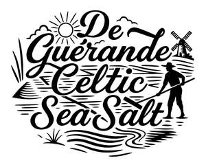

Trade Mark Journal No.2025/039 26 September 2025
UK00004265528 17 September 2025 (35)

- Class 35
- Sales promotions at point of purchase or sale, for others; Business management of wholesale and retail outlets; Business management of wholesale outlets; Business management of retail outlets; Administration of the business affairs of retail stores; Business management for shops; Management of a retail enterprise for others; Business management of restaurants; Assistance in franchised commercial business management; Commercial business management; Business management; Business management assistance for industrial or commercial companies; Business management services; Business management of theaters; Business management of entertainment venues; Online retail store services in relation to clothing; Business management of hospitals; Business management of hotels; Hotels (Business management of -); Online retail store services relating to clothing; Business management advice relating to manufacturing business; Retail store services in the field of clothing; Business management for freelance service providers; Business management for a trade company and for a service company; Business accounts management; Business management of airports; Commercial assistance in business management; Business management and consulting; Business management consulting; Business management assistance in the operation of restaurants; Business marketing services; Business management and consulting services; Business management consulting services; Business management and consultancy; Business management consultancy; Planning concerning business management, namely, searching for partners for amalgamations and business take-overs as well as for business establishments; Sales management services; Assistance to commercial enterprises in the management of their business; Business management services relating to the development of businesses; Advisory services relating to business management and business operations; Providing business management and operational assistance to commercial businesses; Business merchandising display services; Online retail services relating to jewelry; Retail services connected with the sale of furniture; Business management and consultancy services; Business management consultancy services; Business management assistance in the establishment and operation of restaurants; Business marketing consulting services; Business management services relating to the acquisition of businesses; Retail services in relation to bakery products; Business management consultancy in the field of corporate travel; Online retail services relating to clothing; Online retail services relating to handbags; Business consultancy services relating to the supply of quality management systems; Management of business offices for others; Retail services in relation to fashion accessories; Business management consultancy via the Internet; Unmanned retail store services relating to food; Retail services relating to bakery products; Business management of models; Retail services connected with stationery; Business management advisory services relating to commercial enterprises; Online retail services relating to cosmetics; Retail services in relation to seafood; Retail services in relation to saddlery; Business marketing consultancy; Evaluations relating to business management in commercial enterprises; Business project management services; Business management advisory services relating to industrial enterprises; Business management services relating to electronic commerce; Business management of conference centers; Business management services for footballers; Consulting services in business organization and management; Business management of entertainers; Business management assistance in the field of franchising; Retail services in relation to footwear; Business management of logistics for others; Shop retail services connected with carpets; Retail services in relation to bags; Retail services in relation to stationery supplies; Business management of sports people; Business management and enterprise organization consultancy; Business management and organization consultancy services; Business risk management services; Retail services in relation to pet products; Business operation of shopping malls; Business organisation and management consulting services; Retail services relating to food; Business management advisory services relating to franchising; Retail services relating to jewelry; Business promotion services; Retail services in relation to horticulture products; Retail services in relation to confectionery; Business administration and management; Business management and administration; Retail services in relation to gardening products; Advisory services (Business -) relating to the management of public sector businesses; Retail services in relation to furniture; Retail services in relation to clothing; Providing business management start-up support for other businesses; Supply chain management services; Advisory services (Business -) relating to the management of businesses; Retail services in relation to domestic electrical equipment; Retail services relating to delicatessen products; Retail services in relation to furnishings; Retail service connected with the sale of power tools via a distributorship; Evaluations relating to business management in industrial enterprises; Business advisory services relating to business liquidations; Retail services relating to furniture; Presentation of financial products on communication media, for retail purposes; Retail services in relation to jewellery; Business organization and management consulting; Retail services in relation to horticulture equipment; Business management and organization consultancy; Retail services in relation to lighting; Retail services in relation to coffee; Business strategy services; Business management supervision; Business management planning; Retail services in relation to heaters; Retail of third-party pre-paid cards for the purchase of entertainment services; Business organisation and management consulting; Business planning and business continuity consulting; Help in the management of business affairs or commercial functions of an industrial or commercial enterprise; Business brokerage services; Business administration services for processing sales made on the internet; Business administration services for the processing of sales made on the Internet; Business management and consultation services; Business organization and management consultancy including personnel management.
Rabia Idrees